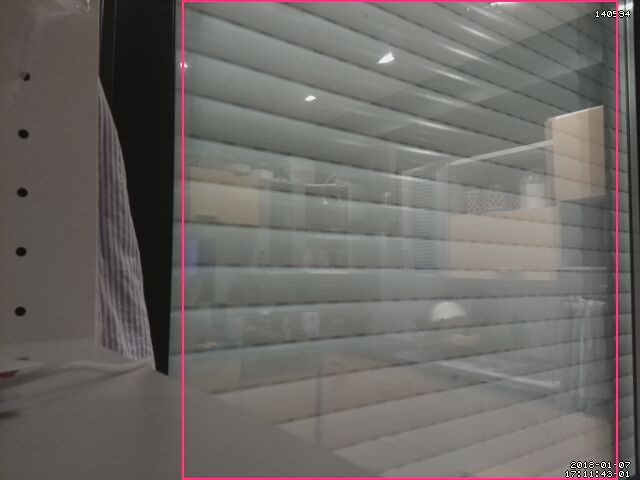
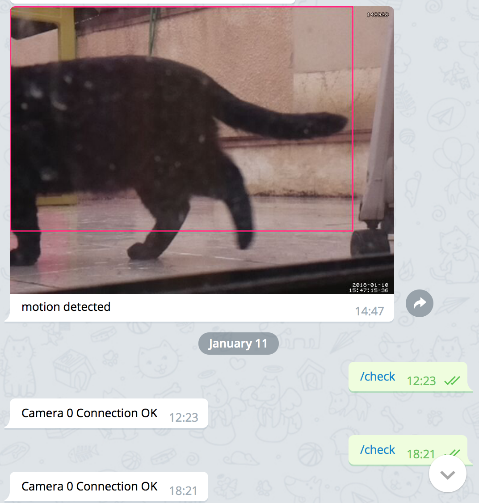
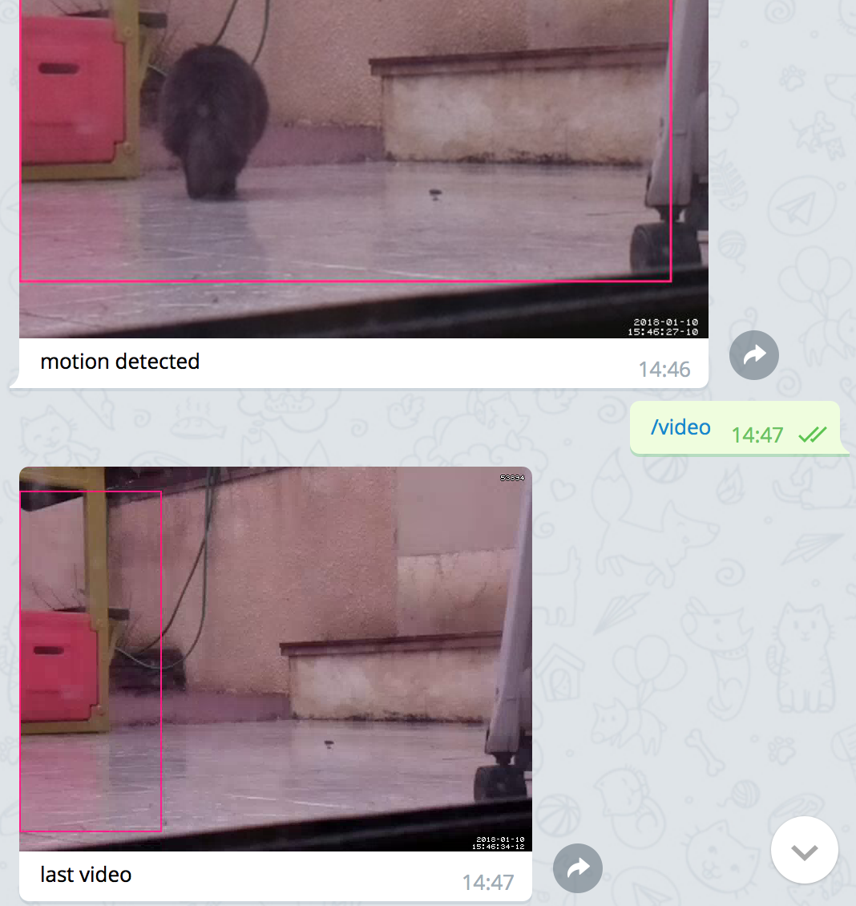
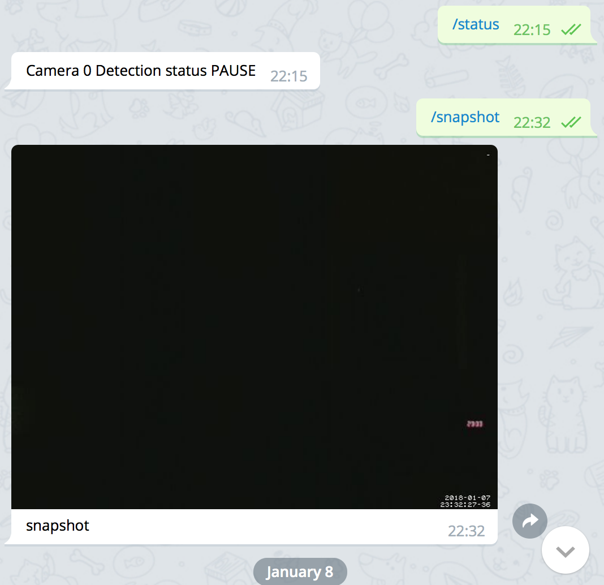

Rationale
The raspberry pi has always been appealing to me, but I needed a project to really get involved. After discussing with Eric Koncina who made several great applications with Pis, I decided to go for a home surveillance system.
The main objective was to see how often the neighbor cats are coming to our garden, because they are scaring our cat. It’s not a big deal, rather a justification for the pi project.
Materials
I bought a Pi3 starter budget kit that contains:
- Pi3
- power, 5V, 2.5A
- case
- SD card 16 Go
Additionally, I purchased:
Was hoping to get some decent pictures / videos with low light. Turned out that IR leds are needed. That goes in the TODO section.
Here is an example of picture with low interior light. Colors are off, but quality is fine to me

Setting-up the pi
I won’t go into details, I mostly followed the instructions in this tutorial. Briefly, here are the main steps
download raspbian lite
Since I have no screen, no keyboard and the pi comes with a WiFi controller, the stretch lite is sufficient. Image can be found at raspberrypi.org
format SD card
using disk utility, choose MS-DOS FAT file system
install raspbian
Ensure your SD card is the second disk (/dev/disk2), otherwise do adapt to the correct one!
enable ssh
Once copied, you can enable ssh by creating an empty file at the SD card root
enable wifi
In order to connect to the pi without screen / keyboard, wifi needs to be configured right away. At the same location (/Volumes/boot) add a file named wpa_supplicant.conf
which contains:
Of note, I recently acquired a pi zeroWH, for which I had to add 3 lines (StackExchange question).
connect to pi
once the raspberrypi booted, try to find its IP
which gives:
Starting Nmap 7.60 ( https://nmap.org ) at 2017-12-08 22:44 CET
Nmap scan report for 192.168.1.27
Host is up (0.0071s latency).
Nmap scan report for 192.168.1.254
Host is up (0.0048s latency).
Nmap done: 256 IP addresses (2 hosts up) scanned in 11.71 seconds192.168.1.254 was the rooter, so pi was assigned 192.168.1.27
ssh pi@192.168.1.27 works.
you can also assign a fixed IP to your pi
final configuration
once connected to the pi:
- run
sudo raspi-configto activate the camera - change password for the
piuser - set up
localesand timezone - update && upgrade raspbian stretch
- add public
sshkey to.ssh/authorized_keysfor password less connection
install the surveillance system
Even if, I’d like to have openCV like in this tutorial, it was way more work. Hence, the choice of motion
motion software
I followed the instructions provided in this great tutorial by Bouvet. With some changes described below.
compilation
see from here https://motion-project.github.io/motion_build.html
run motion
first, as Bouvet suggested, I copied the main config file
mkdir ~/motion && cp /etc/motion/motion.conf ~/motion/
and alter the new copy.
running motion:
motion -c ~/motion/motion.conf
tweaks to the initial tutorial
I choose to get the videos and several other changes made to the motion version 4.1.1. and are reported in the complete diff page below
The initial values are reported in red, in green: the new ones.
see live streaming
with this configuration, you should see the live streaming from this URL: http://192.168.1.27:8081
the web control on port 8080 is disabled apart outside the pi, since we’ll use telegram to control motion
detection
Here is an example of my kid being detected. The red rectangle works nicely

But of course, there are false alarms, such as when the light comes in/out suddenly

the parameter lightswitch 80 reduced the issue but it still exists.
Communication with motion via telegram
Now comes the fun part. Receiving the motion detection by emails is fine, but it can be done via Telegram and the awesome API telepot. Eric told me about telegram bots and it looked promising. Actually, you can even send commands to your pi using your phone using those telegram bots.
The useful feature I implemented are:
- alerts. A motion is detected. Send the best picture to your telegram account.
- pause / resume motion detection. Imagine you are away and for some reason (shadows, your own cat) you keep receiving alerts, you may want to remotely pause the detection. And of course, being able to resume it. Those commands are already in
motion, we just need to talk to it. - status. You haven’t received alerts, is the system running smoothly? You can ask for a confirmation that detection is on. Also, check if the camera is on.
- snapshot. No alerts, but you’d like to get a snapshot at any time.
- video. Maybe the nicest feature IMHO. Sending picture to your phone for every detection is fine, but not all videos. Based on the picture you see, you’d like to get the video of the detection. Once again, by a command to a telegram bot, you receive the last video recorded.
create mybot
Eric gave me the link to this tutorial
Of course, I am assuming you already have our own telegram account.
Talk to the BotFather and create mybot, you will receive a private token.
install telepot
back on the pi, install telepot with pip, assuming you installed python and pip.
test sending message
get the bot id
returns {u'username': u'mybot', u'first_name': u'cat tracker', u'is_bot': True, u'id': 00000008}
get your telegram id:
- send a messages from telegram to
mybot - fetch your message on the pi
your id appears, such as: u’id’: 00000004
basic tests
- for text
bot.sendMessage(00000004, 'Hey!')
- for picture
bot.sendPhoto(00000004, photo=open('/home/pi/motion/detected/07-2018-01-06_205746-13.jpg', 'rb'), caption='motion detected')
create commands for the bot
After sending /setcommands to the BotFather:
time - Returns current time on pi
check - Returns status of the camera
status - Returns status of motion
pause - Pauses the motion detection
resume - Resumes motion detection
snapshot - Returns current image
video - Returns last recorded videoOf note, it doesn’t prevent the bot to receive other commands, it just helps to display commands and select them in telegram.
python script that listen
here the script listen_bot.py, derived from the telepot documentation.
Some comments:
- the last video when requested is fetched from the sub-folder
vids. If we use the main folder of detection, the last video could be an incomplete one form a newer detection. Hence, the command inmotion.confto move a finished video to thevidsfolder. - I failed to restrict the bot to communicate only with me. Might not be a big deal, but the code
if chat_id != 00000008is not working. - the webcontrol was set in the RAW mode. Then the retrieved text can be directly send to your telegram account
#!/usr/bin/python2.7
import datetime
import telepot
import time
import requests
import os
import glob
from telepot.loop import MessageLoop
def webcontrol(chat_id, type, cmd):
req = 'http://localhost:8080/0/'+type+'/'+cmd
res = requests.get(req)
bot.sendMessage(chat_id, res.text)
def handle(msg):
chat_id = msg['chat']['id']
command = msg['text']
#should work thanks to Winston
if msg['from']['id'] != 00000008:
bot.sendMessage(chat_id, "Sorry this is a personal bot. Access Denied!")
exit(1)
print 'Got command: %s' % command
if command == '/snapshot':
requests.get('http://localhost:8080/0/action/snapshot')
elif command == '/status':
webcontrol(chat_id, 'detection', 'status')
elif command == '/pause':
webcontrol(chat_id, 'detection', 'pause')
elif command == '/resume':
webcontrol(chat_id, 'detection', 'start')
elif command == '/check':
webcontrol(chat_id, 'detection', 'connection')
elif command == '/time':
bot.sendMessage(chat_id, 'now is '+str(datetime.datetime.now()))
elif command == '/video':
# the most recent video in this particular folder of complete vids
video = max(glob.iglob('/home/pi/motion/detected/vids/*.mp4'), key=os.path.getctime)
# send video, adapt the the first argument to your own telegram id
bot.sendVideo(00000008, video=open(video, 'rb'), caption='last video')
else:
bot.sendMessage(chat_id, "sorry, I don't know the command "+command)
# adapt the following to the bot_id:bot_token
bot = telepot.Bot('0000000004:bot_token')
MessageLoop(bot, handle).run_as_thread()
print 'I am listening ...'
while 1:
time.sleep(10)Now if the both listen_bot.py and motion -c ~/motion/motion.conf are running, the system should work.
sending scripts
they are called in the motion.conf file.
first, send_detection.py
#!/usr/bin/python2.7
import telepot
import sys
bot = telepot.Bot('0000000004:bot_token')
pic = sys.argv[1]
# change caption if it is a snapshot or motion
if pic.endswith("snapshot.jpg"):
cap = 'snapshot'
else:
cap = 'motion detected'
bot.sendPhoto(00000004, photo=open(pic, 'rb'), caption=cap)
exit(0)second, send_message.py
run scripts at startup
Edit 2018-06-19
for listening
I am now using systemd. Cleaner and safer.
Here, the following is working, but I am sure this is the right way to do, so use we care.
add the file listen.service in the folder /etc/systemd/system:
[Unit]
Description=Listen to foo telegram bot
After=network.target
[Service]
ExecStart=/usr/bin/python2.7 -u listen_bot.py
WorkingDirectory=/home/pi/motion/
StandardOutput=inherit
StandardError=inherit
Restart=always
User=motion
[Install]
WantedBy=multi-user.targetnow as example, you can check the status of this new service listen
pi@raspberrypi:/etc/systemd/system $ service listen status
● listen.service - Listen to foo telegram bot
Loaded: loaded (/etc/systemd/system/listen.service; enabled; vendor preset: enabled)
Active: active (running) since Sun 2018-05-13 21:51:50 CEST; 1 months 6 days ago
Main PID: 502 (python2.7)
CGroup: /system.slice/listen.service
└─502 /usr/bin/python2.7 -u listen_bot.py
May 13 21:51:50 raspberrypi systemd[1]: Started Listen to foo telegram bot.
May 13 21:51:51 raspberrypi python2.7[502]: I am listening ...
Jun 19 20:52:17 raspberrypi python2.7[502]: Got command: /timeAnd, safer since both motion and listen are running as the user motion who does not have sudo rights.
For motion
I am now using the daemon mode to only benefit from systemd
- point the usual conf file towards the tweaked version in your home
be sure to have the correct smblink
Screenshots
Here are some examples of the telegram window
- received a notification and later on,
/checkif connection is still on.

- received notification and ask for the corresponding video

this video works as a GIF directly in the window:

- pause the detection, and since no motion can be detected, ask for a snapshot

TODO
Despite a functional system, some improvements I’d like to achieve:
- restrict the bot to one user: see Winston Smith recommendation in comments, seems to work nicely
- add gracefull stop for
listenservice - I bought a IP camera, and
motionshould work with both. Haven’t spent enough time configuring it - remove pics/videos older than xx days to save space
run the 2 services as a user withoutsudorights- look into better settings for NoIR camera using this thread
Conclusion
Beyond the initial goal, catch the neighbor cats coming in, which actually I don’t care about, it was fun to set-up the whole thing. Moreover, telegram offers a great service and offers a great interface for many applications. I knew about the TeleR bot, that is actually easy to set-up.
Don’t hesitate to leave a comment below for any remarks or improvements that I overseen.